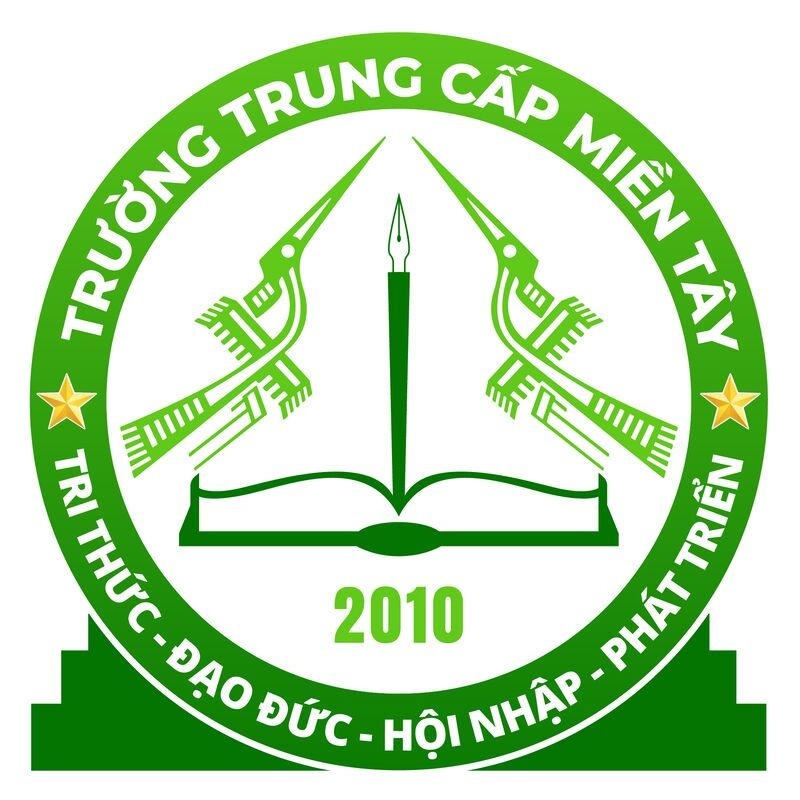

Trường Trung Cấp Miền Tây
Cần Thơ · Đồng Bằng Sông Cửu Long
Kỷ cương · Thân thiện · Thực tiễn
MIỀN TÂY
Trường Trung Cấp Nghề Uy Tín
Tri thức · Đạo đức · Hội nhập · Phát triển

Trường Trung cấp Miền Tây · Catalogue 2026Trường Trung Cấp Nghề Uy Tín
Tri thức · Đạo đức · Hội nhập · Phát triển
Giới thiệu
Trường Trung cấp Miền Tây (TCMT) là cơ sở giáo dục nghề nghiệp đào tạo và phát triển nguồn nhân lực có chuyên môn, kỹ năng nghề nghiệp, đáp ứng nhu cầu thị trường lao động với phương châm lấy người học làm trung tâm.
“Tri thức · Đạo đức · Hội nhập · Phát triển”
Định hướng
Trở thành cơ sở giáo dục nghề nghiệp có uy tín tại ĐBSCL; mở rộng hợp tác trong nước và quốc tế, đào tạo thực hành gắn với doanh nghiệp, cơ sở y tế và xã hội trong chuyển đổi số.
Trang bị kiến thức chuyên môn, kỹ năng nghề và đạo đức nghề; hình thành đội ngũ lao động có tay nghề, tác phong chuyên nghiệp và khả năng phát triển nghề nghiệp bền vững.
Đào tạo
Hoạt động đào tạo kết hợp chặt chẽ giữa lý thuyết và thực hành, chú trọng rèn luyện kỹ năng nghề, tác phong làm việc, ý thức kỷ luật và vận dụng vào thực tế.
Trung cấp, sơ cấp, các khóa bồi dưỡng và cấp chứng chỉ theo chương trình
Đáp ứng đầy đủ điều kiện quy định được xem xét cấp văn bằng, chứng chỉ tương ứng
Hỗ trợ thông tin, kết nối & giới thiệu cơ hội thực tập, việc làm tại các doanh nghiệp
Lịch học 6h–22h, tất cả các ngày trong tuần.
Lựa chọn
Môi trường học tập thân thiện, lấy người học làm trung tâm, rèn luyện kỹ năng nghề
Hệ trung cấp, sơ cấp và chứng chỉ phù hợp với từng đối tượng và mục tiêu nghề nghiệp
Liên kết với ĐH Trà Vinh, ĐH Y Dược Cần Thơ, CĐ Nghề Cần Thơ mở rộng hướng đi
Triển khai đào tạo học sinh, sinh viên Campuchia từ năm 2025, thúc đẩy giao lưu văn hóa
Đào tạo chuyên môn
Chăm sóc sức khỏe ban đầu, y học cơ sở & lâm sàng
→ 02Dược lý, bào chế, quản lý & tư vấn sử dụng thuốc an toàn
→ 03Chăm sóc người bệnh phòng bệnh, điều trị, phục hồi & y đức
→ 04Nền tảng máy tính, mạng, an toàn thông tin & công cụ AI
→ +6 ngành nghề kỹ thuật, sức khỏe thực hành gắn thực tiễn
→Đào tạo trung cấp, sơ cấp & bồi dưỡng chứng chỉ · Tư vấn: 0934 790 790
Trình độ Trung cấp
Chương trình cung cấp kiến thức về y học cơ sở, y học lâm sàng và những kỹ năng chuyên môn cần thiết trong chăm sóc sức khỏe ban đầu.
Trình độ Trung cấp
Trang bị kiến thức về dược lý, dược lâm sàng, bào chế, kiểm nghiệm, bảo quản và quản lý thuốc trong phạm vi chuyên môn.
Trình độ Trung cấp
Hướng đến đào tạo người học có kiến thức và kỹ năng chăm sóc người bệnh trong các giai đoạn phòng bệnh, điều trị và phục hồi.
Trình độ Trung cấp
Xây dựng nền tảng về máy tính, hệ điều hành, phần mềm, tin học văn phòng, mạng máy tính và an toàn thông tin trong bối cảnh chuyển đổi số.
Sơ cấp & chứng chỉ
Xử lý bề mặt, bả matit, pha phối màu, kỹ thuật phun sơn — làm việc tại gara ô tô, trung tâm chăm sóc xe và xưởng đồng sơn.
Gia công cơ khí, an toàn lao động, thực hành hàn MIG/MAG & TIG — làm việc tại xưởng cơ khí, nhà máy sản xuất.
Tháo lắp, kiểm tra, thay thế linh kiện, cài đặt phần mềm và xử lý sự cố máy tính cơ bản tại cửa hàng hoặc bộ phận kỹ thuật.
Chương trình ngắn hạn, chú trọng thực hành và kỹ năng nghề thực tế.
Sơ cấp & chứng chỉ
Giải phẫu – sinh lý vùng răng hàm mặt, nguyên tắc vô khuẩn, kỹ thuật hỗ trợ nha khoa và chăm sóc sức khỏe răng miệng.
Dành cho người đã tốt nghiệp trung cấp trở lên trong khối sức khỏe, bổ sung kiến thức và kỹ năng thực hành điều dưỡng.
Kỹ thuật xoa bóp, bấm huyệt cơ bản và làm quen thiết bị vật lý trị liệu trong chăm sóc sức khỏe, phục hồi chức năng.
Điều kiện tham gia và giá trị chứng chỉ thực hiện theo quy định hiện hành.
Cơ hội học tập
Chọn học nghề phù hợp năng lực, sớm rèn luyện kỹ năng thực hành và tham gia thị trường lao động.
Tư vấn lộ trình hoàn thiện văn bằng tại ĐH Trà Vinh, ĐH Y Dược Cần Thơ, CĐ Nghề Cần Thơ.
Bổ sung kiến thức, học thêm nghề mới với kế hoạch học tập linh hoạt, cân đối cùng công việc.
Đồng hành định hướng nghề nghiệp, hỗ trợ hồ sơ và thủ tục theo chính sách quyền lợi học nghề hiện hành.
Học viên ở xa — nhà trường tư vấn thông tin về điều kiện sinh hoạt và chỗ ở (nếu có).
Kết nối
Nhà trường tăng cường kết nối với các cơ sở giáo dục trong nước, mở rộng hợp tác quốc tế và doanh nghiệp.
MOU ký kết chính thức — tạo điều kiện thực tập và tiếp cận cơ hội việc làm.
Chiến lược
Không ngừng đổi mới vì sự thành đạt và phát triển bền vững của người học.
Kết nối
Lời kết
Trường Trung cấp Miền Tây luôn sẵn sàng đồng hành, tư vấn và hỗ trợ người học lựa chọn chương trình phù hợp, từng bước xây dựng nền tảng nghề nghiệp vững chắc cho tương lai trên hành trình Tri thức – Đạo đức – Hội nhập – Phát triển.
Tri thức – Đạo đức – Hội nhập – Phát triển
https://www.mtpc.edu.vn
0934 790 790 · 0292 222 6677 · 0292 222 5577
130C – 130D Nguyễn Văn Cừ nối dài, phường Tân An, TP. Cần Thơ
© 2026 Trường Trung cấp Miền Tây